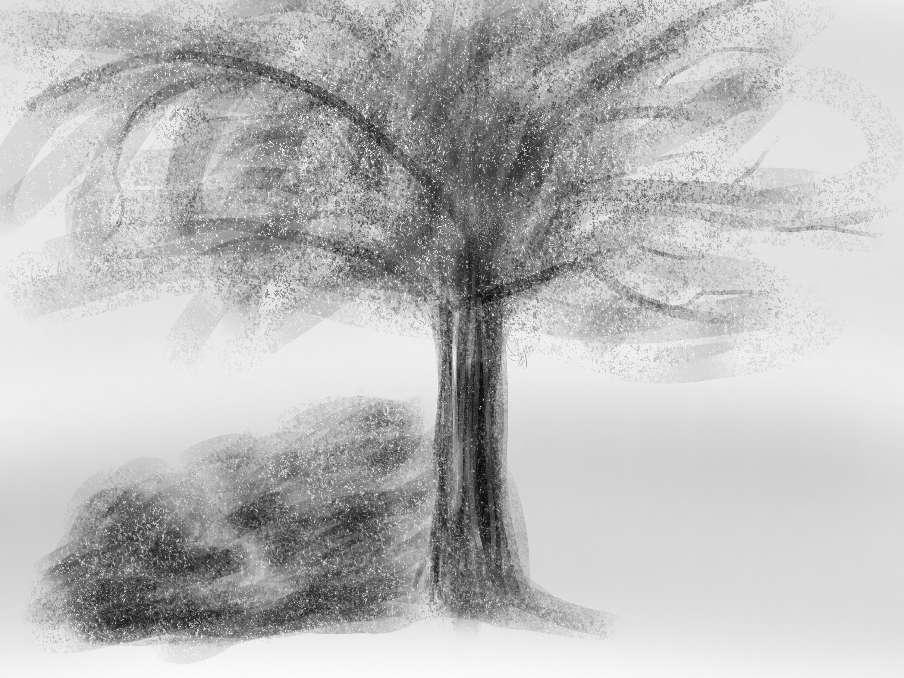

You step outside, and the breeze on your face begins to clear the fog. You begin to walk, at first unaware of what you're doing, automatically settling into a rhythm. It feels odd. You feel odd, your surroundings blurring into a hazy unreality that followed you. The sky isn't real, the people that you pass are missing their faces. But as you keep walking, you begin to notice the feeling of your feet hitting the ground, and hear the conversation flowing around you. You keep walking.

After a few minutes, you feel like yourself again. Your limbs feel normal, your head isn't cloudy, and you feel real again. You still feel stressed about the project, but the fresh air is making it harder to feel stressed. You feel properly motivated now. Maybe you'll stay out here a bit longer, though.
You've taken your break. It's time to finish this.